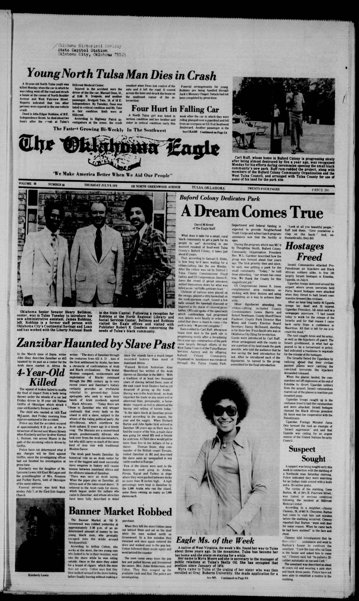

HN-708: Black-press editorial seeks context for Entebbe coverage
HN-708 · August 14, 1976 · War, Conflict & Security > Military Operations & Mobilization > Strategic operations

page scanRecorded finding
Discovery narrative
Source: Indianapolis Recorder, p. 9 — original editorial page.
Report: An opinion-page heading urged readers to “Put Entebbe episode in proper context,” amid columns discussing politics, equality, and international and domestic affairs. The page reflects a distinct editorial discussion from the rescue's celebratory first-week coverage in the Jewish Post.
Assessment: Documented difference in editorial framing, not an independent reconstruction of the raid. The heading does not, by itself, establish a specific contested factual assertion; the complete opinion and its author would need separate close reading before attributing a detailed position.
Original archive images (3)
Authentic images retrieved from Gateway to Oklahoma History (Oklahoma Historical Society), Hoosier State Chronicles (Indiana State Library) and The Militant (Pathfinder Press archive). Article crops are located using the archive's own OCR word coordinates and rendered at native crop resolution; article clips are assembled from the archive's own article-block images; page images marked "archive tiles" are stitched from the archive's own tiled page service at its 256-px tile cap; page images marked "issue PDF" are single pages rasterised from the archive's own issue PDF, with the page chosen by matching the headline against the PDF's text layer; page scans are reduced-size access renditions. No images were generated, mocked, or retouched.

Gateway to Oklahoma History (Oklahoma Historical Society)
Open larger view · Archive viewer (full resolution)

Hoosier State Chronicles (Indiana State Library)
Open larger view · Archive viewer (full resolution)

The Militant (Pathfinder Press archive)
Open larger view · Archive viewer (full resolution)
Source acquisition
Status: Archive images acquired
Authentic archive-owned image renditions were retrieved for this record and are displayed above. The source-acquisition manifest preserves the original pre-acquisition feasibility assessment.
Original seed
URL (preserved verbatim): https://newspapers.library.in.gov/?a=d&d=INR19760814-01.1.9
Saved research report: Historical_Newspaper_Event_Research_703-727_2026-10-23.md
Evidence note: A newspaper report means a historical publication made a claim; it does not establish that claim as fact. Contemporary reporting is separated from later scholarly context and our own assessment.